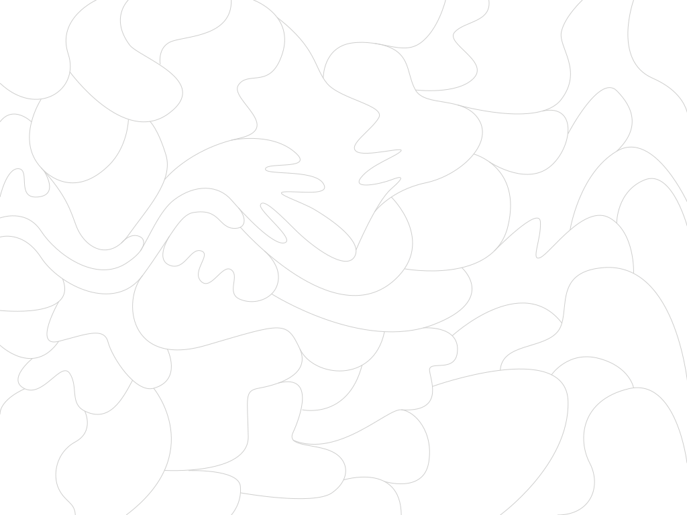

<html>
  <head>
    <script type="text/javascript" src="paperjs/dist/paper-full.min.js"></script>
    <script type="text/paperscript" canvas="canvas">
     var values = {
       paths: 50,
       minPoints: 3,
       maxPoints: 10,
       minRadius: 30,
       maxRadius: 90
     };

     var hitOptions = {
       segments: true,
       stroke: true,
       fill: true,
       tolerance: 5
     };

     var cfg = {
       minPathDelta: 0.1,
       maxPathDelta: 0.25,
       minPathPoints: 2,
       maxPathPoints: 4,
       minDecal: 30,
       maxDecal: 60,
     };

     var front = new Path();
     front.add(new Point(100, 0));
     front.add(new Point(100, 300));
     front.strokeColor = 'white';
     var p = front;

     function onKeyDown() {
       //front.selected = true;

       do {
       	 var t1 = rand(0, 1);
       	 var t2 = rand(t1 + cfg.minPathDelta, t1 + cfg.maxPathDelta);
       }
       while (t2 > 1);

       var p1 = new Path.Line(new Point(-10, 300 * t1), new Point(1000, 300 * t1));
       var l1 = p1.getIntersections(front)[0]
       var p1 = l1.point;

       var p2 = new Path.Line(new Point(-10, 300 * t2), new Point(1000, 300 * t2));
       var l2 = p2.getIntersections(front)[0]
       var p2 = l2.point;

       var nPoints = Math.floor(rand(cfg.minPathPoints, cfg.maxPathPoints));

       var b = front.bounds;

       var points = [];
       for (var i = 0; i < nPoints; i++) {
	 var x = Math.max(p1.x, p2.x) + rand(20, 40);
	 //var x = b.bottomRight.x + rand(cfg.minDecal, cfg.maxDecal);
	 //var y = rand(b.topRight.y, b.bottomRight.y);
	 var y = rand(p1.y, p2.y)
	 //var y = rand(-100, 400);
	 if (y < 0) y = 0;
	 if (y > 300) y = 300;

	 var p = new Point(x, y);
	 points.push(p);
	 smallCircle(p);
       }

       points.sort(function(a, b){
	 var ka = (a-p1).angle;
	 var kb = (b-p1).angle;
	 if(ka < kb) return -1;
	 if(ka > kb) return 1;
	 return 0;
       });

       p = new Path();
       for (var i = 0; i < points.length; i++) {
	 p.add(points[i]);
       }
       p.insert(0, p1);
       p.add(p2);

       p.strokeColor = 'orange';
       p.smooth();
       p.simplify();

       front.strokeColor = 'orange';

       var l1 = front.getNearestLocation(p1);
       var middle = front.split(l1);
       // front.strokeColor = 'red';

       var l2 = middle.getNearestLocation(p2);
       var down = middle.split(l2);
       // down.strokeColor = 'red';

       front.join(p);
       front.join(down);
       front.selected = false;
       window.f = front;
     }

     function rand(a, b) {
       var x = Math.random();
       return a*x + b*(1-x);
     }

     function smallCircle(point) {
       return;
       var c = new Path.Circle(point, 3);
       c.strokeColor = 'blue';
     }

     // createPaths();

     function createPaths() {
       var radiusDelta = values.maxRadius - values.minRadius;
       var pointsDelta = values.maxPoints - values.minPoints;
       for (var i = 0; i < values.paths; i++) {
     	 var radius = values.minRadius + Math.random() * radiusDelta;
     	 var points = values.minPoints + Math.floor(Math.random() * pointsDelta);
     	 var path = createBlob(view.size * Point.random(), radius, points);
     	 var lightness = (Math.random() - 0.5) * 0.74 + 0.4;
     	 var hue = Math.random() * 360;
     	 path.fillColor = { hue: hue, saturation: 1, lightness: lightness };
     	 path.strokeColor = 'black';
       };
     }

     function createBlob(center, maxRadius, points) {
       var path = new Path();
       path.closed = true;
       for (var i = 0; i < points; i++) {
     	 var delta = new Point({
     	   length: (maxRadius * 0.5) + (Math.random() * maxRadius * 0.5),
     	   angle: (360 / points) * i
     	 });
     	 path.add(center + delta);
       }
       path.smooth();
       return path;
     }

    </script>
  </head>
  <body>
    <canvas id="canvas" resize></canvas>
    <!--  -->
  </body>

</html>
